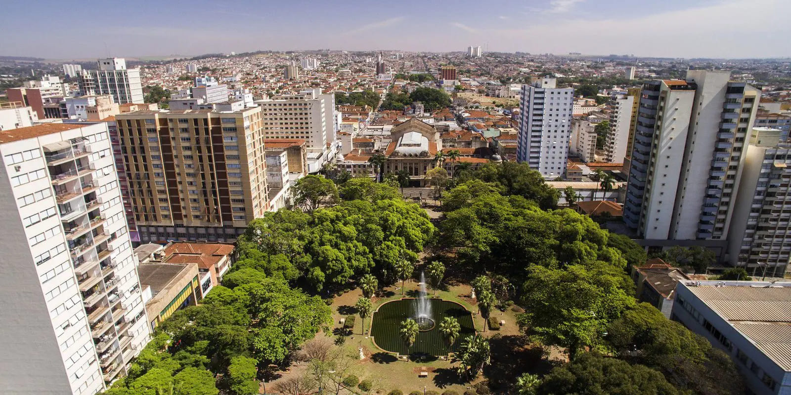
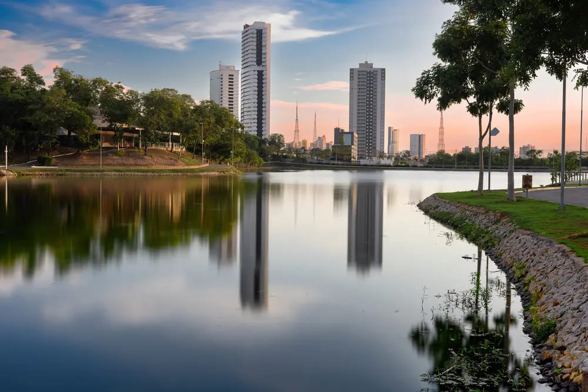
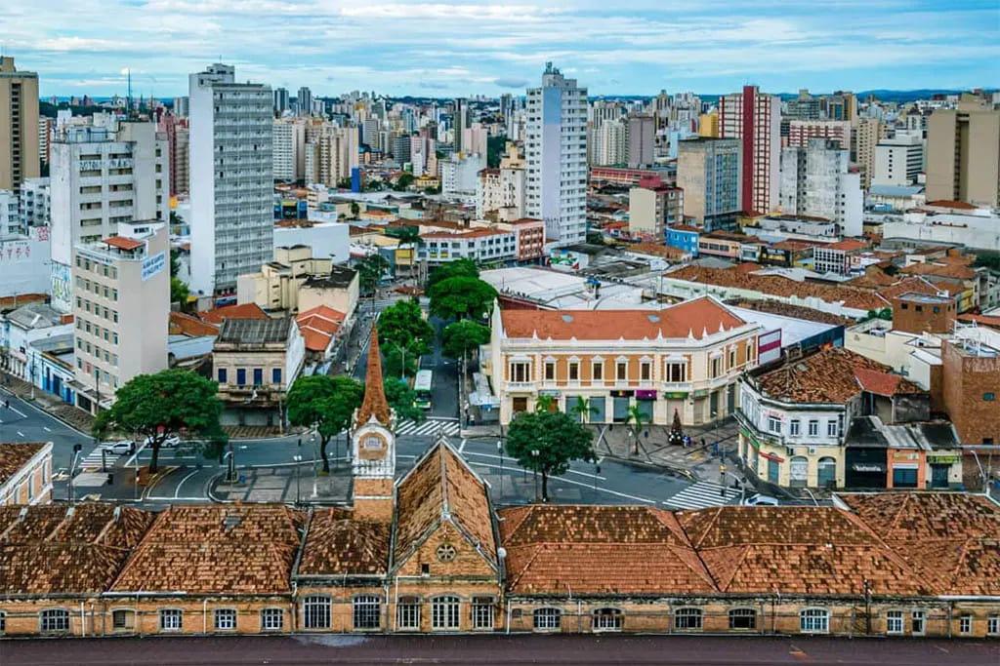
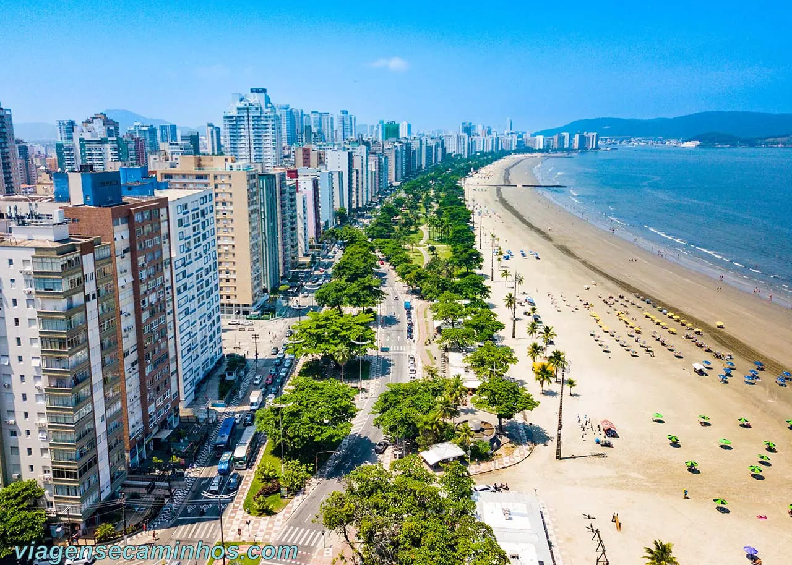
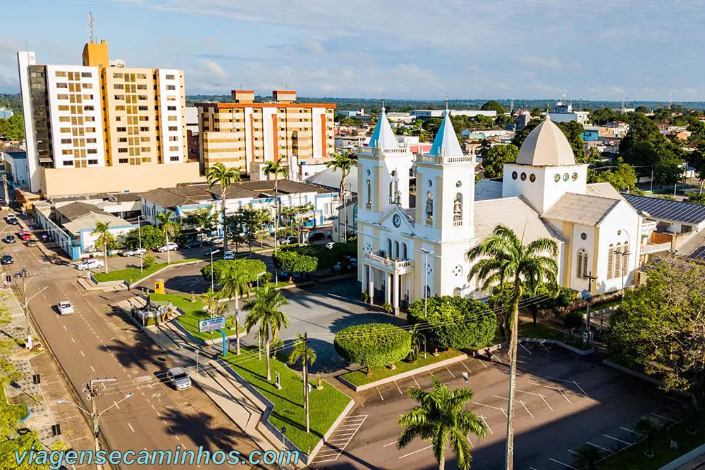

Sostieni la nostra Lista Fase conclusa
Il termine per sostenere la lista è scaduto il 3/10/2026. Grazie a chi ha sostenuto la nostra candidatura. Ora passa alla fase successiva.
Vedi le indicazioni di questa faseChiudi le indicazioni
Per sostenere la nostra candidatura, la firma deve essere autenticata di persona presso il Consolato Generale d'Italia a San Paolo o nelle sedi della missione itinerante.
È necessario portare almeno uno dei seguenti documenti:
- Carta d'identità brasiliana (RG) con meno di 10 anni;
- Passaporto brasiliano valido;
- Patente di guida brasiliana (CNH) di nuovo modello con meno di 10 anni;
- Un documento italiano valido (passaporto o CIE).
Dove andare
Consolato Generale d'Italia a San Paolo
Av. Paulista, 1963 · Bela Vista
San Paolo · SP · 01311-300
Quando andare
Dal lunedì al venerdì: dalle 13 alle 16
Sabati: 19 e 26 settembre; 3 ottobre, dalle 10 alle 13.
Orari straordinari pubblicati dal Consolato l'11/09/2026.
Chi contattare
Prima di uscire, contatta la Centrale della Campagna al (11) 99709-0665 per concordare l'assistenza della DIB sul posto e confermare il programma dell'incontro.
Parla con la Centrale ↗Missioni itineranti
Raccolta e autenticazione delle firme della lista anche in questi luoghi:

16/09 · 10:00-13:00
Ribeirão Preto (SP)
Sede del Viceconsolato Onorario
Rua Itacolomi, 484
CEP 14025-250

18/09 · 09:00-12:00
Cuiabá (MT)
Sede del Viceconsolato Onorario
Travessa Chamal, Lote 8, Quadra 10
Quartiere Jardim Bom Clima · CEP 78048-237

22/09 · 10:00-13:00
Campinas (SP)
Sede del Consolato Onorario
Av. Barão de Itapura, 2310
Guanabara

24/09 · 10:00-13:00
Santos (SP)
Sede del Viceconsolato Onorario
Alameda Armênio Mendes, 66
Conj. 2501

25/09 · 10:00-13:00
Porto Velho (RO)
Sede del Viceconsolato Onorario
Rua Duque de Caxias, 590
Luoghi e orari pubblicati dal Consolato Generale d'Italia a San Paolo l'11/09/2026.